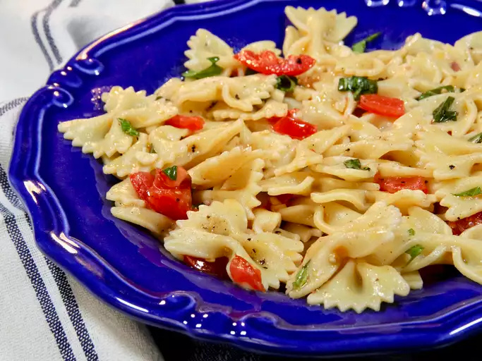

Home
Easy Olive Oil, Tomato, and Basil Pasta

A Delicious and Healthy Dish
Ingredients
- 1 (16 ounce) package farfalle pasta
- 2 roma (plum) tomatoes, seeded and diced
- 1/2 cup olive oil
- 2 cloves garlic, minced
- salt and pepper to taste
Steps
- Bring a large pot of lightly salted water to a boil. Add pasta and cook for 8 to 10
minutes or until al dente; drain.
- In a large bowl, gently toss the cooked pasta, tomatoes, olive oil, garlic, and
basil. Season with salt and pepper.